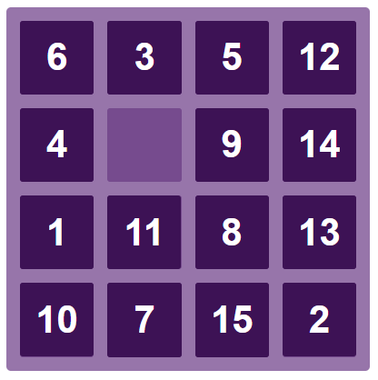

Для завершения проекта нам осталось реализовать перемешывание костяшек в начале игры и вывод поздравительного сообщения в конце.
Нужно написать функцию shuffleTiles, которая будет перемешивать костяшки. Она должна многократно выбирать случайный элемент из массива tiles и эмулировать нажатие на него левой кнопкой мыши. Итогом работы должно стать что-то похожее.
